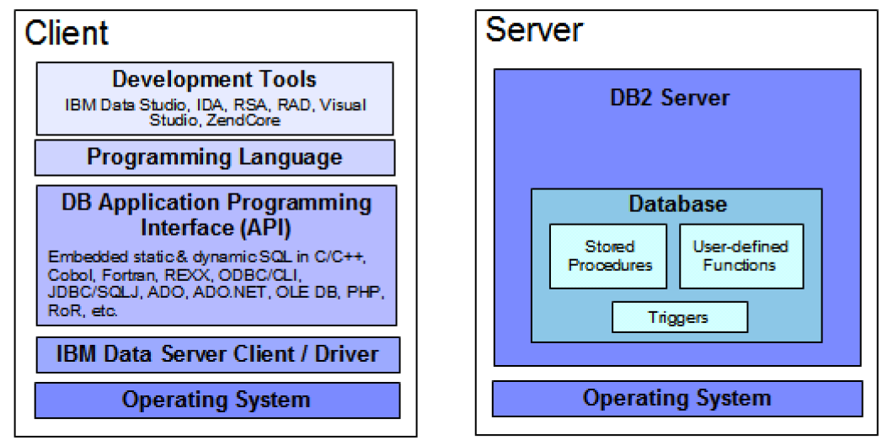
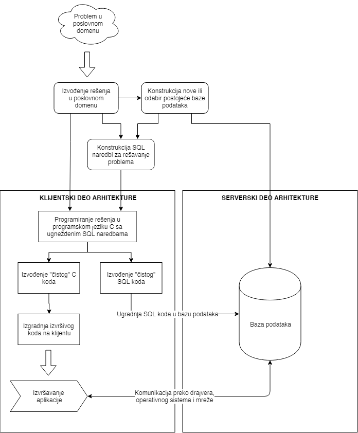

Programiranje baza podataka
1. Uvod u programiranje baza podataka
DB2 je sistem za upravljanje relacionim bazama podataka (RSUBP) koji nudi veoma moćne softverske alate za programiranje baza podataka. Ovi alati su korisni kako administratorima baza podataka, tako i programerima aplikacija koje koriste mogućnosti relacionih baza podataka. Pod programiranjem baza podataka možemo smestiti naredne dve aktivnosti:
- Programiranje na serveru, odnosno, programiranje SQL rutina.
- Programiranje na klijentu kroz više programske jezike.
Programiranje na klijentu podrazumeva korišćenje viših programskih jezika kao što su C, C++, Java, PHP i mnogih drugih. Često se ovi jezici nazivaju i matični jezici (engl. host language). Korišćenjem nekih od razvojnih okruženja, ti programski jezici se koriste za pristupanje interfejsu za programiranje aplikacija (engl. application programming interface, skr. API). Kroz ovaj interfejs se zatim, preko drajvera koji je dostupan programerima, aplikacija povezuje sa RSUBP i izvršava SQL upite. Ovo povezivanje sa bazom podataka se izvršava kroz mogućnosti operativnog sistema na kojem se klijentska aplikacija izvršava.
Sa druge strane, programiranje na serveru obuhvata programiranje tzv. SQL rutina (engl. SQL routine). SQL rutina može biti: ugrađena procedura (engl. stored procedure), korisnički-definisana funkcija (engl. user-defined function) ili okidač (engl. trigger). Svi ovi tipovi SQL rutina podrazumevaju programiranje operacija koje se čuvaju u samoj bazi podataka. Programeri zatim imaju mogućnost poziva ovih sačuvanih procedura, odn. njihovog izračunavanja.

1.1 Opis razvoja klijentskih aplikacija
Prilikom razvijanja klijentskih aplikacija važno je odrediti viši programski jezik koji će se koristiti. Odabir konkretnog višeg programskog jezika u određenoj meri diktira proces razvoja u kontekstu API-ja koji je dostupan za dati viši programski jezik. Međutim, bez obzira koji se viši programski jezik koristi, koncepti koji se koriste za rad sa bazama podataka su isti. Ono što dodatno olakšava ovaj proces jeste postojanje različitih elemenata softverskog paketa koji se zove Db2 Data Server Client. Neki od elemenata ovog paketa sa kojima ćemo se susreti u ovoj knjizi su:
- Prekompilatori za C/C++, COBOL i Fortran.
- Podrška za ugnežđene SQL naredbe u višim programskim jezicima u vidu programerskih biblioteka, zaglavlja za uključivanje u izvorni kod i primere izvornih kodova.
- Podrška za aplikacije zasnovane na ODBC i Db2 Call Level Interface (Db2 CLI) standardima.
- IBM Data Server Driver za JDBC i SQLJ aplikacije.
- IBM Data Studio softversko okruženje za razvoj aplikacija i radom sa Db2 bazama podataka.
Opišimo sada proces razvoja klijentskih aplikacija na primeru aplikacije sa ugnežđenim SQL naredbama u programskom jeziku C. Ovaj proces će biti opisan na dovoljno apstraktnom nivou da ne ulazi u detalje programskog jezika C i detalja procesa vezanim za njega, ali će biti i dovoljno konkretan da čitalac stekne opšti utisak u način razvoja klijentskih aplikacija za rad sa Db2 bazama podataka.
Nakon prepoznavanja problema i izvođenja njegovog rešenja u poslovnom modelu, pristupa se konstrukciji baze podataka i definisanju potrebnih SQL naredbi koje će se koristiti u njegovom rešavanju. Baza podataka se zatim instalira na Db2 serveru baze podataka, a SQL naredbe se koriste u izvornom kodu višeg programskog jezika C prateći odgovarajući C/SQL Db2 API. Aplikacija se kodira na klijentu koji ima instaliran Db2 Data Server Client softverski paket sa alatima za razvoj aplikacija. S obzirom da kod predstavlja “mešavinu” C naredbi i SQL naredbi, potrebno je izvesti iz tog koda nova dva međukoda: jedan koji ima “čiste” C naredbe i drugi koji ima “čiste” SQL naredbe. Prvi međukod se podvrgava procesu prevođenja kao i svaki drugi C program, dok se drugi kod proverava nad bazom podataka nad kojom su definisane SQL naredbe koje se koriste. Ukoliko nema grešaka, SQL naredbe se ugrađuju u bazu podataka, a od izvornog C koda se formira izvršni program.
Izvršni program se zatim instalira na odgovarajućim uređajima gde će se koristiti (pri čemu je potrebno da ti sistemi imaju odgovarajuće Db2 drajvere za komunikaciju sa Db2 serverom baze podataka - ovo je po pravilu lakše instalirati od celog Db2 Data Server Client softverskog paketa). Prilikom pokretanja programa, aplikacija izvršava C naredbe kao i svaki drugi C program, a kada naiđe na deo koda koji upravlja bazom podataka, program vrši komunikaciju sa datom bazom podataka preko odgovarajućeg Db2 drajvera, korišćenjem mogućnosti operativnog sistema i mreže, čime se prethodno ugrađene SQL naredbe izvršavaju. Rezultati izvršavanja tih SQL naredbi se šalju nazad programu, uz eventualno izveštavanje o greškama ili upozorenjima do koje je došlo u sistemu za upravljanje bazom podataka.

1.2 Opis razvoja serverskih aplikacija
1.3 Podešavanje okruženja za rad
Za početak, neophodno je da instaliramo Db2 sistem za upravljanje bazom podataka na našem operativnom sistemu.
1.3.1 Instalacija Db2 SUBP
Pakete za instalaciju je moguće preuzeti narednim koracima:
- Otvoriti stranicu koja se nalazi na adresi https://www.ibm.com/products/db2-database/developers.
- Odabrati opciju “Try the free edition now”.
- Kreirati IBM nalog i prijaviti se na sistem.
- Moguće je da sistem zatraži od Vas da odaberete opcije vezane za privatnost. Odaberite opcije i nastavite dalje.
- Nakon toga bi trebalo da se otvori stranica sa naslovom “IBM Db2 Download Center”, gde se može pronaći lista Db2 proizvoda za različite operativne sisteme.
- Preuzeti odgovarajuću verziju “IBM Db2 v11.5.5” klikom na “Download” pored odgovarajućeg operativnog sistema.
- Štiklirati “I Agree”, pa kliknuti na “Confirm” i “Continue”.
Ukoliko koristite Linux OS, instalacija se vrši na sledeći način:
- Otpakovati arhivu i u terminalu se pozicionirati u direktorijum koji se kreirao prilikom otpakivanja
- Pokrenuti komandu:
sudo ./db2setupAko pri instaliranju dobijete poruku da nedostaje biblioteka
libaio.so.1, pokrenite komandusudo apt-get install libaio1ili koristite odgovarajući upravljač paketima za Vaš sistem.
- Pratiti uputstva u instalacionom prozoru:
- Obratiti pažnju da se proizvod instalira na lokaciju
/opt/ibm/db2/V11.5(ovo je bitno zbog skripta za prevođenje programa). - Obraditi pažnju da se odabere “Custom Install” i označiti sve opcije da se instaliraju.
- Obratiti pažnju na korisnički nalog koji se kreira kao “Instance owner” (podrazumevano je “db2inst1”, što će biti korišćeno u nastavku). Zapamtite šifru koju ste ukucali za ovog korisnika.
- Obeležiti opciju “Autostart the instance at system startup” da bi se server sam podizao prilikom pokretanja sistema.
- Obratiti pažnju da se proizvod instalira na lokaciju
- Za podešavanje da neki drugi korisnik na sistemu može da koristi DB2 RSUBP, potrebno je izvršiti naredne dodatne korake:
- Kreirati novog korisnika. U nastavku će to biti korisnik
studentsa lozinkomabcdef. Preporučuje se da koristite iste kredencijale da bi Vam kodovi radili bez da ih menjate. - Kreirati novu grupu (u nastavku ce to biti grupa
pbp_db2_admin):sudo groupadd pbp_db2_admin - Dodati grupi
pbp_db2_adminkorisnikastudent:sudo usermod -a -G pbp_db2_admin student -
Restartovati sistem i ulogovati se kao korisnik
db2inst1sa lozinkom koju ste ukucali pri instalaciji. - Izvršiti narednu komandu:
db2 update dbm cfg using SYSADM_GROUP pbp_db2_admin - Ulogovati se kao korisnik
studentsa lozinkomabcdef - Iz datoteke
/home/db2inst1/.profileprekopirati tri linije koda koje se u toj datoteci nalaze nakon naredne linije:# The following three lines have been added by IBM DB2 instance utilities. - Zalepiti prekopirane linije na kraj datoteke
/home/student/.profile - Restartovati sistem i ulogovati se kao
student - Pokrenuti komande:
db2start db2 - Ukoliko Vam se uspešno pokrenuo upravljač bazom podataka i db2 komandna linija, onda ste uspešno instalirali Db2 sistem. (Iz db2 komandne linije se izlazi naredbom
quit).
- Kreirati novog korisnika. U nastavku će to biti korisnik
Instalacija za Windows operativni sistem podrazumeva sličnu proceduru (nakon otpakivanja arhive, pokrenuti setup.exe), te je nećemo detaljnije izlagati ovde.
Nakon instalacije Db2 SUBP na Windows sistemu, na raspolaganju nam je dostupna skript datoteka “DB2 Command Window - Administrator” za podešavanje okruženja komandne linije.
Skript se može pronaći na narednim lokacijama (lokacije se mogu razlikovati na Vasem sistemu):
- Iz Start menija:
Start > IBM DB2 DB2COPY1 (Default) > DB2 Command Window - Administrator - Na lokaciji:
C:\ProgramData\Microsoft\Windows\Start Menu\Programs\IBM DB2 DB2COPY1 (Default)\
Ovaj skript služi za inicijalizaciju Db2 okruženja.
1.3.2 Korišćenje Docker kontejnera
Ukoliko ne želite da instalirate SUBP, na raspolaganju je i Docker kontejner koji se može pronaći na adresi https://hub.docker.com/r/ibmcom/db2. Detaljno uputstvo za upotrebu se nalazi u opisu Docker kontejnera na datoj adresi.
1.3.3 Instalacija IBM Data Studio alata
- Otvoriti stranicu koja se nalazi na adresi https://www.ibm.com/products/ibm-data-studio.
- Kliknuti na “Download product”.
- Prijaviti se na sistem sa kreiranim IBM nalogom u prethodnim instrukcijama.
- Prihvatiti licencu.
- Nakon toga bi trebalo da se otvori stranica sa naslovom “IBM Data Studio client”.
- Kliknuti na tab “Download using http”.
- Preuzeti verziju alata za odgovarajući operativni sistem klikom na “Download” pored naziva verzije.
U slučaju Linux operativnog sistema:
- Otpakovati arhivu i u terminalu se pozicionirati u direktorijum koji se kreirao prilikom otpakivanja.
- Pokrenuti komandu:
sudo ./launcher.sh - Ukoliko se žali da ne može da pronađe odgovarajući veb pregledač, onda umesto prethodne komande pokrenuti narednu komandu (ignorisati eventualne greske) i malo sačekati da se pokrene “IBM Installation Manager”:
sudo ./imLauncherLinux.sh
U slučaju Windows operativnog sistema:
- Pokrenuti instalacionu datoteku
launchpad.exeiz otpakovane arhive pod administratorskim privilegijama.
Nakon što se otvori prozor za instalaciju:
- Kliknuti na “Install”.
- Prvo će se instalirati “IBM Installation Manager”, a zatim će se instalirati “IBM Data Studio”.
- Prilikom instalacije “IBM Data Studio” softvera, obavezno odabrati data “Data Studio Full client” (najbolje je da štiklirate sve što Vam je ponuđeno da se instalira), da biste mogli da razvijate Java aplikacije.
- Potencijalno restartovati računar nakon instalacije.
- Pokrenuti Data Studio da biste proverili instalaciju.
1.3.4 Instaliranje C/C++ kompilatora za Windows
Većina Linux operativnih sistema već dolazi sa preinstaliranim alatima za razvoj C/C++ aplikacija. Za Windows operativne sisteme ovo nije slučaj, pa je potrebno instalirati Visual Studio okruženje za razvoj. Alternativno, moguće je instalirati samo Visual C/C++ alate za razvoj iz komandne linije (tražite “Build Tools for Visual Studio” na stranici).
Nakon instalacije proizvoda, na raspolaganju nam je dostupna skript datoteka za podešavanje okruženja komandne linije (lokacija se može razlikovati ako ste odabrali drugačiju putanju prilikom instalacije):
C:\Program Files (x86)\Microsoft Visual Studio\2017\Community\VC\Auxiliary\Build\vcvars64.bat
Skript se može pronaći i:
- Iz Start menija:
Start > Visual Studio 2017 > x64 Native Tools Command Prompt for VS 2017 - Na lokaciji:
C:\ProgramData\Microsoft\Windows\Start Menu\Programs\Visual Studio 2017\Visual Studio Tools\VC\
Ovaj skript služi za inicijalizaciju Visual C/C++ alata za razvoj. Radi lakšeg pristupa, pretpostavimo da ste napravili prečicu do ovog skripta sa nazivom x64 Native Tools Command Prompt for VS 2017.lnk nalaze na Desktopu. Da bismo mogli da kompiliramo SQC datoteke, potrebno je da uradimo sledeće:
- Otvoriti “DB2 Command Window - Administrator” sa administratorskim privilegijama.
- U terminalu koji se otvorio, pokrenuti naredne komande (zameniti
usernameVašim korisničkim nalogom):cd /D C:\Users\username\Desktop\ "x64 Native Tools Command Prompt for VS 2017.lnk" cd /D C:\Users\username\Desktop\
Sada možemo da koristimo DB2 alate i Visual C/C++ alate. Na primer, ako se na Desktopu nalazi datoteka aplikacija.sqc koju želimo da prevedemo, onda koristeći skript prevodjenje.bat koji je naveden ispod, prevođenje se vrši na sledeći način:
prevodjenje.bat aplikacija stud2020
Trebalo bi da vidimo poruku sličnu narednoj:
Database Connection Information
Database server = DB2/NT64 11.5.1.1
SQL authorization ID = USERNAME...
Local database alias = STUD2020
LINE MESSAGES FOR aplikacija.sqc
------ --------------------------------------------------------------------
SQL0060W The "C" precompiler is in progress.
SQL0091W Precompilation or binding was ended with "0"
errors and "0" warnings.
LINE MESSAGES FOR aplikacija.bnd
------ --------------------------------------------------------------------
SQL0061W The binder is in progress.
SQL0091N Binding was ended with "0" errors and "0" warnings.
Microsoft (R) C/C++ Optimizing Compiler Version 19.16.27025.1 for x64
Copyright (C) Microsoft Corporation. All rights reserved.
aplikacija.c
Microsoft (R) Incremental Linker Version 14.16.27025.1
Copyright (C) Microsoft Corporation. All rights reserved.
Prilikom uspešnog prevođenja, skript generiše izvršnu datoteku aplikacija.exe koju je moguće pokrenuti:
aplikacija.exe
Skript za prevođenje prevodjenje.bat dat je u nastavku:
@echo off
set INCLUDE=%DB2PATH%\include;%INCLUDE%
db2 connect to %2
db2 precompile %1.sqc bindfile
db2 bind %1.bnd
cl /Zi /Od /c /W3 %1.c
link -debug -out:%1.exe %1.obj "%DB2PATH%\lib\db2api.lib"
1.3.5 Uputstvo za prevođenje SQLJ aplikacija iz terminala
Ukoliko se primer sastoji od samo jedne SQLJ datoteke, npr. Primer.sqlj, onda je dovoljno pokrenuti skript za prevođenje:
./bldsqlj Primer
Ako se primer sastoji od više SQLJ datoteka, na primer, Primer.sqlj (koji sadrži metod main i predstavlja glavni program) i Iterator.sqlj (koji sadrži deklaraciju iteratora koji se koristi u Primer.sqlj), onda je potrebno prvo transpilirati pomoćne datoteke pozivanjem:
sqlj Iterator.sqlj
a zatim prevesti glavnu datoteku:
./bldsqlj Primer
Napomena: Potrebno je da se u istom direktorijumu gde se nalazi kod, smeste i skriptovi za prevođenje: bldsqlj i db2customize2.
Pokretanje programa se vrši skriptom pokreni:
./pokreni Primer
Skriptovi za prevođenje i pokretanje se nalaze u nastavku:
Skript bldsqlj:
#!/bin/sh
# To hardcode user ID (USER) and password (PSWD)
# Replace "NULL" with the correct values in quotes
USER="student"
PSWD="abcdef"
# You can replace the defaults for each of the following
# with a new value. Note that the PORTNUM number cannot
# be one already used by another process.
SERVER=bp
PORTNUM=50001
DB="vstud"
# Translate and compile the SQLJ source file
# and bind the package to the database.
if ( [ $# -eq 1 ] && [ $USER != "NULL" ] && [ $PSWD != "NULL" ] ) || ( [ $# -ge 3 ] && [ $# -le 6 ] )
then
# Remove .sqlj extension
progname=${1%.sqlj}
sqlj "${progname}.sqlj"
if [ $# -eq 1 ]
then
./db2sqljcustomize2 -url jdbc:db2://$SERVER:$PORTNUM/$DB \
-user $USER -password $PSWD "${progname}_SJProfile0"
elif [ $# -eq 3 ]
then
./db2sqljcustomize2 -url jdbc:db2://$SERVER:$PORTNUM/$DB -user $2 -password $3 \
"${progname}_SJProfile0"
elif [ $# -eq 4 ]
then
./db2sqljcustomize2 -url jdbc:db2://$4:$PORTNUM/$DB -user $2 -password $3 \
"${progname}_SJProfile0"
elif [ $# -eq 5 ]
then
./db2sqljcustomize2 -url jdbc:db2://$4:$5/$DB -user $2 -password $3 \
"${progname}_SJProfile0"
else
./db2sqljcustomize2 -url jdbc:db2://$4:$5/$6 -user $2 -password $3 \
"${progname}_SJProfile0"
fi
else
echo 'Usage: bldsqlj prog_name (requires hardcoding user ID and password)'
echo ' bldsqlj prog_name userid password'
echo ' bldsqlj prog_name userid password server_name'
echo ' bldsqlj prog_name userid password server_name port_number'
echo ' bldsqlj prog_name userid password server_name port_number db_name'
echo ''
echo ' Defaults:'
echo ' userid = '$USER
echo ' password = '$PSWD
echo ' server_name = '$SERVER
echo ' port_number = '$PORTNUM
echo ' db_name = '$DB
fi
Skript db2customize2:
#!/bin/sh
java com.ibm.db2.jcc.sqlj.Customizer "$@"
Skript pokreni:
#!/bin/sh
java -Djava.library.path="/opt/ibm/db2/V10.5/lib32" $1
1.3.6 Uputstvo za pravljenje JDBC Java projekta u Data Studio alatu
- Otvoriti “Java” perspektivu:
- Window > Open Perspective > Other
- Štiklirati “Show all”
- Odabrati “Java” i pritisnuti OK
- Ukoliko se prikaže prozor “Confirm Enablement”, pritisnuti OK
- U “Package Explorer” pogledu napraviti novi Java projekat:
- Desni klik na “Package Explorer”
- New > Java Project
- Dodeliti projektu naziv
- Pritisnuti “Finish”
- Napravljenom projektu dodati DB2 JDBC drajvere:
- Desni klik na projekat
- Iz padajućeg menija izabrati “Properties”
- Iz levog menija izabrati “Java Build Path” i zatim tab “Libraries”
- Izabrati opciju “Add External JARs…” i dodati
db2jcc4.jaridb2jcc_license_cu.jarkoje se nalaze na lokaciji:- Linux:
/opt/ibm/db2/V10.5/java - Windows:
C:\Program Files\IBM\IBM\SQLLIB\java
- Linux:
- Izabrati OK
- Kreirati novi paket u projektu:
- Desni klik na projekat
- Iz padajućeg menija izabrati New > Package
- Dodeliti paketu naziv
- Pritisnuti “Finish”
- Kreirati novu klasu u paketu i dodati joj main metod:
- Desni klik na paket
- Iz padajućeg menija izabrati New > Class
- Dodeliti klasi naziv
- Štiklirati “public static void main(String[] args)”
- Pritisnuti “Finish”
- Iskucati željeni kod
- Pokrenuti JDBC aplikaciju:
- Desni klik na klasu
- Iz padajućeg menija izabrati Run as > Java Application
1.3.7 Uputstvo za uvoženje JDBC projekta u Data Studio
- Kreirati novi projekat
- Odabrati File > New > Java Project
- Dodeliti naziv projektu
- Odabrati opciju “Create separate folders for sources and class files”
- Pritisnuti “Finish”
- Uvesti fajl strukturu postojećeg projekta u novokreirani projekat
- Odabrati File > Import…
- Odabrati General > File System
- U polju “From directory” navesti putanju do postojećeg projekta ili odabrati “Browse…”, pa potražiti postojeći projekat na računaru,
na primer:
~\Downloads\cas10 - Označiti direktorijum koji se pojavi u levom prozoru
- U polju “Into folder” navesti direktorijum novokreiranog projekta ili ga potražiti u listi klikom na “Browse…”
- Odabrati “Finish”
- Napravljenom projektu dodati DB2 JDBC drajvere, kao u prethodnom uputstvu
1.4 Baza podataka STUD2020
U zadacima u ovom tekstu se koristi baza podataka STUD2020. To je pojednostavljen model baze podataka informacionog sistema fakulteta. Podaci su nalik na podatke iz baze podataka Matematičkog fakulteta, ali sadržaj ne odgovara stvarnim podacima.
Baza podataka ima dve skoro identične kopije organizovane u dve sheme:
-
U shemi
DAsu tabele sa ASCII niskama, koje su lakše za rad u komandom režimu i u alatima koji ne rade dobro sa Unicode niskama. -
U shemi
DBsu skoro iste tabele, ali sa Unicode sadržajem.
Svaka od ove dve kopije baze ima po 16 tabela i može da se posmatra kao celovita baza podataka.
1.4.1 Kreiranje baze podataka STUD2020
- Preuzeti ovu arhivu sa skriptovima za kreiranje baze podataka
STUD2020i popunjavanje ove baze podacima. - Otpakivovati arhivu.
- Otvoriti terminal (na Linux sistemu), odnosno, “DB2 - Command Window Administrator” (na Windows sistemu) i u njemu se pozicionirati u otpakovani direktorijum.
- Iz ove lokacije pokrenuti skript
create.shza Linux sistem, odnosno,create.cmdza Windows sistem.
1.4.2 Opis baze podataka STUD2020
Na narednoj slici je prikazan dijagram baze podataka. Dijagram baze podataka ćemo predstaviti u notaciji nalik na UML. U svakoj tabeli su označeni atributi koji pripadaju primarnom ključu. Strani ključevi i jedinstveni ključevi su navedeni u drugom odeljku, odvojeno od atributa. Strani ključevi su ilustrovani i strelicama od zavisne tabele prema baznoj tabeli.

Dajmo sada nešto detaljnije opise tabela koje postoje u ovoj bazi podataka. Uz tekstualni opis dajemo i strukturu tabele koju čine nazivi kolona i njihove karakteristike kao što su: tip, veličina, da li može sadržati nedostajuće vrednosti itd.
- Tabela
DA.NIVOKVALIFIKACIJEsadrži osnovne podatke o nivoima studija:
Data type Column
Column name schema Data type name Length Scale Nulls
------------------------------- --------- ------------------- ---------- ----- ------
ID SYSIBM SMALLINT 2 0 No
NAZIV SYSIBM VARCHAR 100 0 No
2 record(s) selected.
- Tabela
DA.STUDIJSKIPROGRAMsadrži osnovne podatke o studijskim programima. Svaki studijski program ima oznaku, naziv, nivo, obim u ESPB, odgovarajuće zvanje i opis:
Data type Column
Column name schema Data type name Length Scale Nulls
------------------------------- --------- ------------------- ---------- ----- ------
ID SYSIBM INTEGER 4 0 No
OZNAKA SYSIBM VARCHAR 10 0 No
NAZIV SYSIBM VARCHAR 50 0 No
IDNIVOA SYSIBM SMALLINT 2 0 No
OBIMESPB SYSIBM SMALLINT 2 0 No
ZVANJE SYSIBM VARCHAR 100 0 No
OPIS SYSIBM LONG VARCHAR 32700 0 Yes
7 record(s) selected.
- Tabela
DA.PREDMETsadrži podatke o svim predmetima koji postoje na fakultetu. Svaki predmet ima skraćenu oznaku, naziv i broj ESPB koje nosi:
Data type Column
Column name schema Data type name Length Scale Nulls
------------------------------- --------- ------------------- ---------- ----- ------
ID SYSIBM INTEGER 4 0 No
OZNAKA SYSIBM VARCHAR 20 0 No
NAZIV SYSIBM VARCHAR 150 0 No
ESPB SYSIBM SMALLINT 2 0 No
4 record(s) selected.
- Tabela
DA.PREDMETPROGRAMAsadrži podatke o obaveznim i izbornim predmetima na studijskim programima.
Da bi student diplomirao, mora da položi sve obavezne predmete studijskog programa i još onoliko izbornih predmeta koliko je potrebno do ukupnog obima studijskog programa u ESPB. Radi jednostavnosti, smatraćemo da se ostali predmeti, koji nisu ni obavezni ni izborni na upisanom studijskom programu, ne računaju u savladan obim predmeta.
Ako je predmet obavezan, onda postoji i podatak o semestru u kome je uobičajeno da se sluša i polaže:
Data type Column
Column name schema Data type name Length Scale Nulls
------------------------------- --------- ------------------- ---------- ----- ------
IDPREDMETA SYSIBM INTEGER 4 0 No
IDPROGRAMA SYSIBM INTEGER 4 0 No
VRSTA SYSIBM VARCHAR 10 0 No
SEMESTAR SYSIBM SMALLINT 2 0 Yes
4 record(s) selected.
- Tabela
DA.USLOVNIPREDMETsadrži podatke o parovima uslovnhm predmeta. Uslovnosti se definišu na nivou studijskog programa. Na studijskom programuIDPROGRAMAvaži da je za polaganje predmetaIDPREDMETAneophodno da se prvo položi predmetIDUSLOVNOGPREDMETA:
Data type Column
Column name schema Data type name Length Scale Nulls
------------------------------- --------- ------------------- ---------- ----- ------
IDPROGRAMA SYSIBM INTEGER 4 0 No
IDPREDMETA SYSIBM INTEGER 4 0 No
IDUSLOVNOGPREDMETA SYSIBM INTEGER 4 0 No
3 record(s) selected.
- Tabela
DA.STUDENTSKISTATUSsadrži osnovne podatke o statusima koje studenti mogu imati tokom studiranja. Status ima ID i naziv i podatak o tome da li student trenutno studira.
Atribut STUDIRA je 1 akko je status aktivan:
Data type Column
Column name schema Data type name Length Scale Nulls
------------------------------- --------- ------------------- ---------- ----- ------
ID SYSIBM SMALLINT 2 0 No
NAZIV SYSIBM VARCHAR 50 0 No
STUDIRA SYSIBM SMALLINT 2 0 No
3 record(s) selected.
- Tabela
DA.DOSIJEsadrži podatke o studentima. Od ličnih podataka tu su ime, prezime, mesto rođenja i pol. Od podataka o studiranju imamo broj indeksa, upisan studijski program, trenutni status, datum upisa i datum diplomiranja:
Data type Column
Column name schema Data type name Length Scale Nulls
------------------------------- --------- ------------------- ---------- ----- ------
INDEKS SYSIBM INTEGER 4 0 No
IDPROGRAMA SYSIBM INTEGER 4 0 No
IME SYSIBM VARCHAR 50 0 No
PREZIME SYSIBM VARCHAR 50 0 No
POL SYSIBM CHARACTER 1 0 Yes
MESTORODJENJA SYSIBM VARCHAR 50 0 Yes
IDSTATUSA SYSIBM SMALLINT 2 0 No
DATUPISA SYSIBM DATE 4 0 No
DATDIPLOMIRANJA SYSIBM DATE 4 0 Yes
9 record(s) selected.
- Tabela
DA.DOSIJEEXTsadrži dodatne opisne podatke o studentima. Namenjena je za rad sa velikim i strukturiranim podacima tipaBLOB,CLOBiXML:
Data type Column
Column name schema Data type name Length Scale Nulls
------------------------------- --------- ------------------- ---------- ----- ------
INDEKS SYSIBM INTEGER 4 0 No
FOTOGRAFIJA SYSIBM BLOB 10485760 0 Yes
PODACICLOB SYSIBM CLOB 10485760 0 Yes
PODACIXML SYSIBM XML 0 0 Yes
4 record(s) selected.
- Tabela
DA.SKOLSKAGODINAsadrži podatke o školskim godinama:
Data type Column
Column name schema Data type name Length Scale Nulls
------------------------------- --------- ------------------- ---------- ----- ------
SKGODINA SYSIBM SMALLINT 2 0 No
DATPOCETKA SYSIBM DATE 4 0 No
DATKRAJA SYSIBM DATE 4 0 No
3 record(s) selected.
- Tabela
DA.UPISGODINEsadrži podatke o upisanim školskim godinama. Svaki upis godine sadrži podatke o tome koji student je koju školsku godinu upisao kog dana i u kom statusu. Status može i naknadno da se promeni, na primer zbog mirovanja:
Data type Column
Column name schema Data type name Length Scale Nulls
------------------------------- --------- ------------------- ---------- ----- ------
INDEKS SYSIBM INTEGER 4 0 No
SKGODINA SYSIBM SMALLINT 2 0 No
DATUPISA SYSIBM DATE 4 0 No
IDSTATUSA SYSIBM SMALLINT 2 0 No
4 record(s) selected.
- Tabela
DA.SEMESTARsadrži podatke o semestrima:
Data type Column
Column name schema Data type name Length Scale Nulls
------------------------------- --------- ------------------- ---------- ----- ------
SKGODINA SYSIBM SMALLINT 2 0 No
SEMESTAR SYSIBM SMALLINT 2 0 No
2 record(s) selected.
- Tabela
DA.KURSsadrži podatke o kursevima. Kurs je jedno držanje nastave iz jednog predmeta. Za svaki kurs se vodi koji predmet se drži u kom semestru koje školske godine. Jedan predmet može da se drži u oba semestra jedne školske godine:
Data type Column
Column name schema Data type name Length Scale Nulls
------------------------------- --------- ------------------- ---------- ----- ------
SKGODINA SYSIBM SMALLINT 2 0 No
SEMESTAR SYSIBM SMALLINT 2 0 No
IDPREDMETA SYSIBM INTEGER 4 0 No
3 record(s) selected.
- Tabela
DA.UPISANKURSsadrži podatke o kursevima koje studenti upisuju u upisanim školskim godinama. Postoje podaci o tome koji student je u kojoj skolskoj godini i kom semestru upisao koji predmet. Jedan student ne može da upiše dva kursa iz istog predmeta u jednoj školskoj godini:
Data type Column
Column name schema Data type name Length Scale Nulls
------------------------------- --------- ------------------- ---------- ----- ------
INDEKS SYSIBM INTEGER 4 0 No
SKGODINA SYSIBM SMALLINT 2 0 No
SEMESTAR SYSIBM SMALLINT 2 0 No
IDPREDMETA SYSIBM INTEGER 4 0 No
4 record(s) selected.
- Tabela
DA.ISPITNIROKsadrži podatke o ispitnim rokovima. Za svaki ispitni rok imamo oznaku i naziv, datume početka i kraja, kao i školsku godinu na koju se odnosi:
Data type Column
Column name schema Data type name Length Scale Nulls
------------------------------- --------- ------------------- ---------- ----- ------
SKGODINA SYSIBM SMALLINT 2 0 No
OZNAKAROKA SYSIBM VARCHAR 20 0 No
NAZIV SYSIBM VARCHAR 30 0 No
DATPOCETKA SYSIBM DATE 4 0 No
DATKRAJA SYSIBM DATE 4 0 No
5 record(s) selected.
-
Tabela
DA.ISPITsadrži podatke o prijavljenim i održanim ispitima. Za svaki prijavljen i/ili položen ispit se vode podaci o školskoj godini, oznaci roka, predmetu, indeksu studenta, statusu prijave, datumu polaganja, broju osvojenih poena (0-100) i oceni (5-10). Status prijave može da bude:- p - ispit je prijavljen i još nije održan (broj poena i ocena nisu uneseni);
- n - student nije izašao (broj poena i ocena nisu uneseni);
- o - student je polagao ispit (broj poena i ocena su uneseni);
- d - student je diskvalifikovan (broj poena i ocena su uneseni, ocena=5);
- s - student je odustao (broj poena i ocena su uneseni, ocena=5);
- x - ispit je poništen (broj poena i ocena su uneseni).
Samo redovi sa statusom “o” i pozitivnom ocenom označavaju da je ispit položen:
Data type Column
Column name schema Data type name Length Scale Nulls
------------------------------- --------- ------------------- ---------- ----- ------
SKGODINA SYSIBM SMALLINT 2 0 No
OZNAKAROKA SYSIBM VARCHAR 20 0 No
INDEKS SYSIBM INTEGER 4 0 No
IDPREDMETA SYSIBM INTEGER 4 0 No
STATUS SYSIBM CHARACTER 1 0 No
DATPOLAGANJA SYSIBM DATE 4 0 Yes
POENI SYSIBM SMALLINT 2 0 Yes
OCENA SYSIBM SMALLINT 2 0 Yes
8 record(s) selected.
- Tabela
DA.PRIZNATISPITsadrži podatke o ispitima koji su studentima priznati. Ispiti koji se priznaju su položeni na drugom fakultetu ili na drugom (možda starijem) studijskom programu. Radi jednostavnosti, ne čuvaju se detaljni podaci o položenim prdmetima već samo oni koji su neophodni za njihovo vrednovanje: naziv, obim u ESPB i ocena. Svi priznati ispit se vrednuju kao da su na upisanom studijskom programu, a mogu imati nedefinisanu ocenu, ako se predmet nije ocenjivao:
Data type Column
Column name schema Data type name Length Scale Nulls
------------------------------- --------- ------------------- ---------- ----- ------
INDEKS SYSIBM INTEGER 4 0 No
NAZIVPREDMETA SYSIBM VARCHAR 200 0 No
ESPB SYSIBM SMALLINT 2 0 No
OCENA SYSIBM SMALLINT 2 0 Yes
4 record(s) selected.
1.5 Alat db2
Prilikom instalacije Db2 SUBP, na raspolaganju nam je alat komandne linije db2 kojim možemo izvršavati razne operacije sa bazama podataka. Ilustrujmo neke elementarne naredbe ovog alata pri radu sa bazom podataka STUD2020.
Pre nego što izvršimo bilo kakvu naredbu, neophodno je da napravimo konekciju ka bazi podataka:
db2 "CONNECT TO STUD2020"
Database Connection Information
Database server = DB2/NT64 11.5.1.1
SQL authorization ID = DB2INST1
Local database alias = STUD2020
Ukoliko ne navedemo dodatne argumente, db2 alat će se na bazu podataka povezati sa korisničkim imenom i lozinkom trenutno prijavljenog korisnika na sistemu. Moguće je specifikovati konkretnog korisnika sa kojim će se kreirati konekcija:
db2 "CONNECT TO STUD2020 USER student"
Enter current password for student: ******
Database Connection Information
Database server = DB2/NT64 11.5.1.1
SQL authorization ID = STUDENT
Local database alias = STUD2020
Kao što vidimo, alat od nas zahteva da unesemo lozinku pre prijavljivanja. Konačno, možemo specifikovati lozinku prilikom povezivanja:
db2 "CONNECT TO STUD2020 USER student USING abcdef"
Narednom naredbom možemo prikazati sve tabele u odgovarajućoj shemi:
db2 "LIST TABLES FOR SCHEMA DA"
Table/View Schema Type Creation time
------------------------------- --------------- ----- --------------------------
DOSIJE DA T 2020-12-24-17.57.25.149001
DOSIJEEXT DA T 2020-12-24-17.57.25.204001
ISPIT DA T 2020-12-24-17.57.25.827001
ISPITNIROK DA T 2020-12-24-17.57.25.775001
KURS DA T 2020-12-24-17.57.25.473001
NIVOKVALIFIKACIJE DA T 2020-12-24-17.57.24.534001
PREDMET DA T 2020-12-24-17.57.25.005001
PREDMETPROGRAMA DA T 2020-12-24-17.57.25.036000
PRIZNATISPIT DA T 2020-12-24-17.57.25.387001
SEMESTAR DA T 2020-12-24-17.57.25.442001
SKOLSKAGODINA DA T 2020-12-24-17.57.25.417001
STUDENTSKISTATUS DA T 2020-12-24-17.57.25.121001
STUDIJSKIPROGRAM DA T 2020-12-24-17.57.24.875001
UPISANKURS DA T 2020-12-24-17.57.25.692001
UPISGODINE DA T 2020-12-24-17.57.25.529001
USLOVNIPREDMET DA T 2020-12-24-17.57.25.091001
16 record(s) selected.
Izlistavanje informacija o nekoj tabeli, na primer, DA.DOSIJE, dobijamo pozivom naredbe:
db2 "DESCRIBE TABLE DA.DOSIJE"
Data type Column
Column name schema Data type name Length Scale Nulls
------------------------------- --------- ------------------- ---------- ----- ------
INDEKS SYSIBM INTEGER 4 0 No
IDPROGRAMA SYSIBM INTEGER 4 0 No
IME SYSIBM VARCHAR 50 0 No
PREZIME SYSIBM VARCHAR 50 0 No
POL SYSIBM CHARACTER 1 0 Yes
MESTORODJENJA SYSIBM VARCHAR 50 0 Yes
IDSTATUSA SYSIBM SMALLINT 2 0 No
DATUPISA SYSIBM DATE 4 0 No
DATDIPLOMIRANJA SYSIBM DATE 4 0 Yes
9 record(s) selected.
Alatom db2 možemo izvršavati proizvoljne SQL naredbe, na primer, upite:
db2 "SELECT * FROM DA.NIVOKVALIFIKACIJE"
ID NAZIV
------ ----------------------------------------------------------------------------------------------------
1 Osnovne akademske studije
3 Doktorske akademske studije
2 Master akademske studije
3 record(s) selected.
SQL naredbe je moguće izvršavati i iz datoteka. Na primer, neka je u radnom direktorijumu na raspolaganju datoteka upit.sql sa narednim sadržajem:
-- Datoteka "upit.sql":
SELECT SKGODINA,
OZNAKAROKA,
IDPREDMETA,
SUM(
CASE
WHEN OCENA > 5 AND STATUS='o' THEN 1.0
ELSE 0.0
END
) / COUNT(*) * 100.0 AS USPESNOST
FROM DA.ISPIT I
GROUP BY SKGODINA,
OZNAKAROKA,
IDPREDMETA
ORDER BY IDPREDMETA ASC,
SKGODINA ASC,
OZNAKAROKA DESC
FETCH FIRST 10 ROWS ONLY;
Izvršavanje ovog SQL upita se može izvršiti naredbom:
db2 -t -f upit.sql
SKGODINA OZNAKAROKA IDPREDMETA USPESNOST
-------- -------------------- ----------- ---------------------------------
2015 sep1 1578 10.00
2015 jun1 1578 40.00
2015 jan2 1578 10.00
2015 jan1 1578 80.00
2016 sep1 1578 20.00
2016 jun1 1578 50.00
2016 jan2 1578 10.00
2016 jan1 1578 60.00
2017 sep1 1578 20.00
2017 jun1 1578 40.00
10 record(s) selected.
Opcija:
-tdefiniše da se krajem jedne SQL naredbe smatra karakter;umesto novog reda;-f DATOTEKAdefiniše da se SQL naredba pročita iz datotekeDATOTEKA;-vispisuje SQL naredbu koja se izvršava pre nego što se ispiše rezultat.
Ukoliko SQL naredba proizvede grešku, ta greška će biti prikazana u konzoli. Na primer:
db2 "INSERT INTO DA.SKOLSKAGODINA VALUES (2020, '09/23/2019', '05/18/2020')"
DB21034E The command was processed as an SQL statement because it was not a
valid Command Line Processor command. During SQL processing it returned:
SQL0803N One or more values in the INSERT statement, UPDATE statement, or
foreign key update caused by a DELETE statement are not valid because the
primary key, unique constraint or unique index identified by "1" constrains
table "DA.SKOLSKAGODINA" from having duplicate values for the index key.
SQLSTATE=23505
U ovom slučaju je prijavljena greška SQL0803N, odnosno, greška čiji je kod -803. Detaljne informacije o tome šta uzrokuje neku grešku možemo dobiti izvršavanjem naredbe:
db2 "? SQL-803"
SQL0803N One or more values in the INSERT statement, UPDATE statement,
or foreign key update caused by a DELETE statement are not valid
because the primary key, unique constraint or unique index
identified by "<index-id>" constrains table "<table-name>" from
having duplicate values for the index key.
Explanation:
The INSERT or UPDATE object table "<table-name>" is
constrained by one or more UNIQUE indexes to have unique values in
certain columns or groups of columns. Alternatively, a DELETE statement
on a parent table caused the update of a foreign key in a dependent
table "<table-name>" that is constrained by one or more UNIQUE
indexes. Unique indexes might support primary keys or unique constraints
defined on a table. The statement cannot be processed because completing
the requested INSERT, UPDATE or DELETE statement would result in
duplicate column values. If the index is on an XML column, the duplicate
values for the index key may be generated from within a single XML
document.
...
sqlcode: -803
sqlstate: 23505
Related information:
Troubleshooting data source connection errors
Izlaz iz konzole iznad je skraćen radi čuvanja prostora.
Na kraju, kada smo završili rad sa bazom podataka, potrebno je da raskinemo konekciju:
db2 "CONNECT RESET"
DB20000I The SQL command completed successfully.